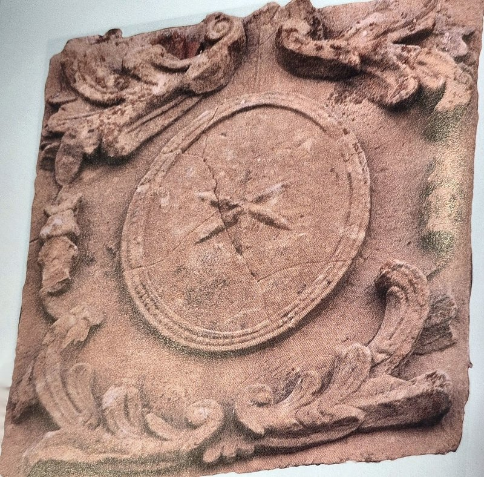
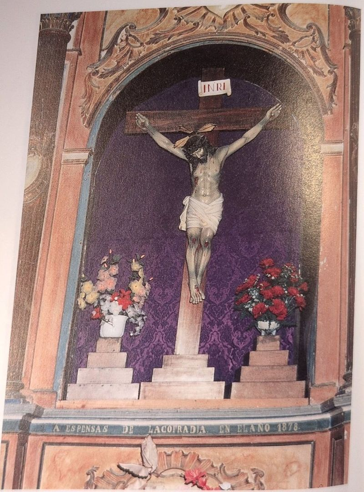
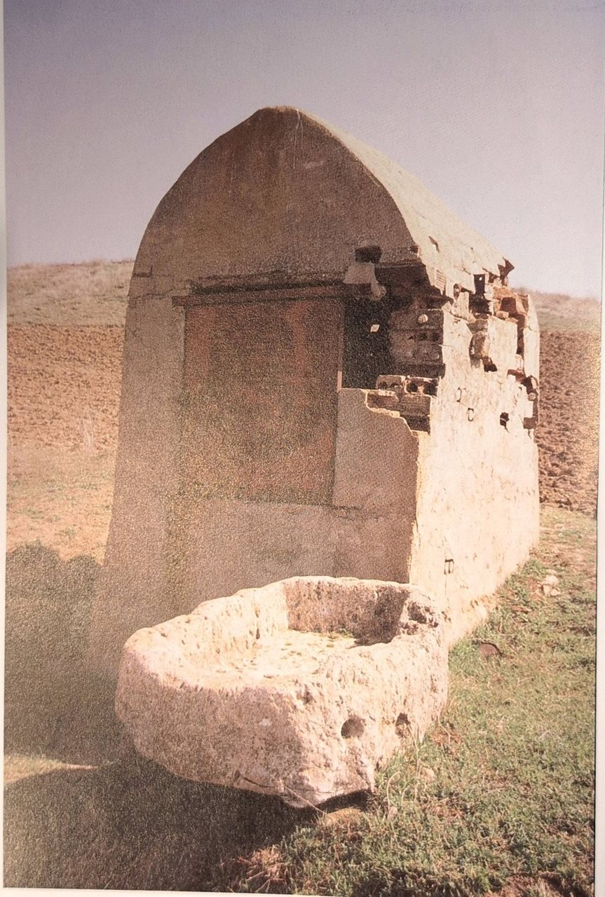
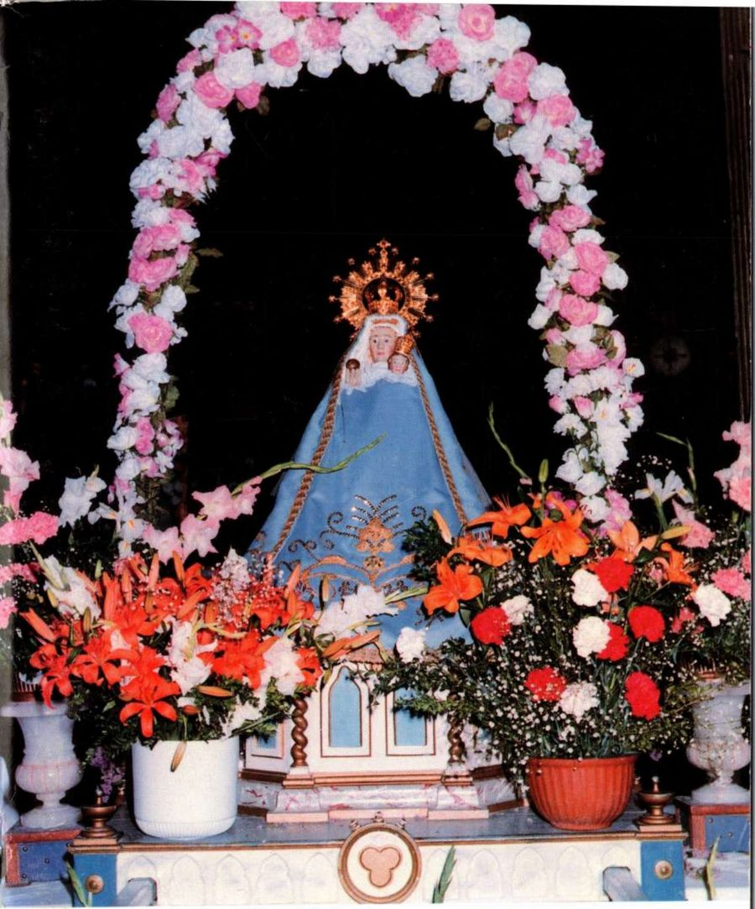
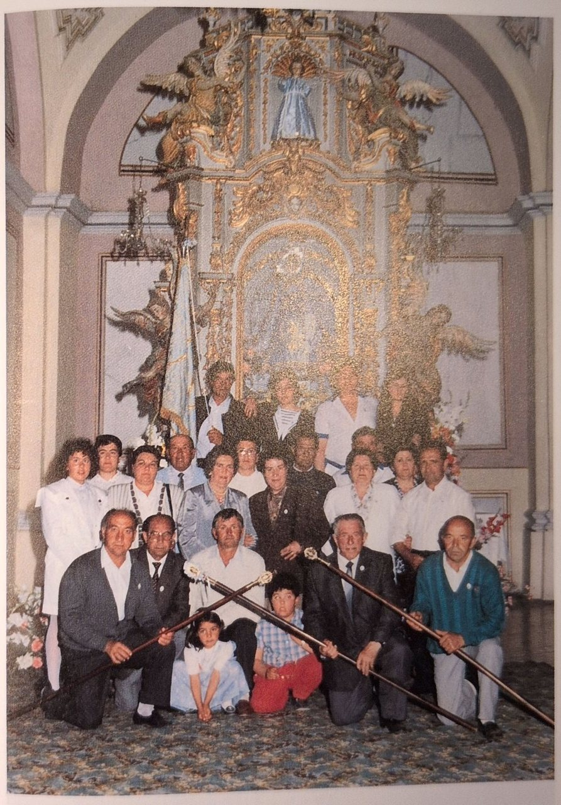
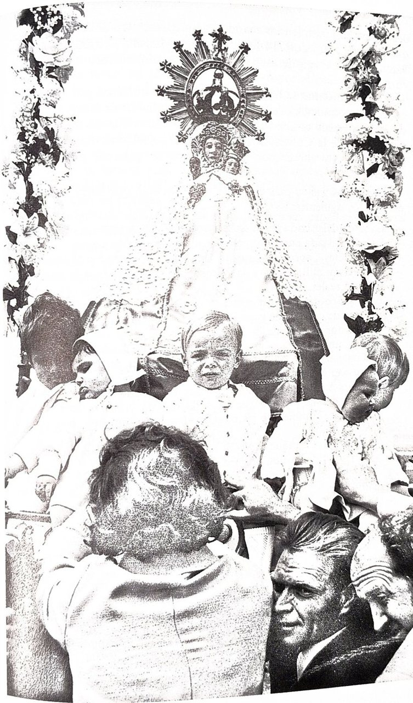
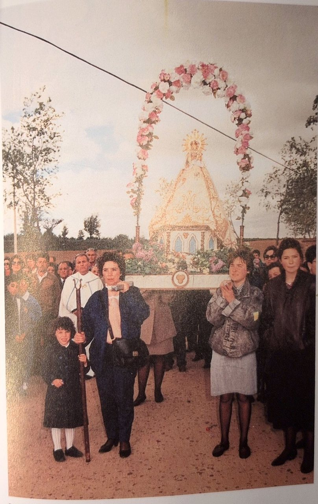

Ermita de la Virgen de la Casita
El santuario de Nuestra Señora de la Casita, patrona de Alaejos: una imagen del siglo XIII, una ermita de cinco siglos y una devoción que sigue viva.
En esta página (15 apartados · 34 min de lectura)
- Lo que cuenta la tradición
- Lo que dicen las piedras
- Una casita dentro de la Casita
- La imagen: del siglo XIII, no del XVIII
- Las camareras y el ajuar
- ¿Casita o Visitación?
- Pastores y danzantes
- Mayo y septiembre
- Novenas y gozos
- Favores y exvotos
- Arreglos y restauraciones
- Ermitas hermanas
- La Casita y los que se fueron
- Lo que aún no sabemos
- Para seguir leyendo

La ermita se levanta en un cerro poco elevado, a unos dos kilómetros al este del pueblo, a medio camino entre Alaejos y Siete Iglesias de Trabancos. En Siete Iglesias la llaman a veces «la medianera», pero está en término de Alaejos. Se llega por el Camino de la Casita. Sigue abierta al culto y se puede visitar los fines de semana y en las fiestas.
«La Casita» es mucho más que un edificio. Así se llaman la patrona, su ermita, dos calles, el pago, el camino, el pinar de las meriendas y las fiestas de septiembre, y hay alaejanas que llevan ese nombre de pila. Lo recordaba José M. Baraja en el programa de fiestas de 2018 («La Casita»).
Esta página separa lo que está documentado de lo que cuenta la tradición. La fuente principal es el estudio del historiador del arte Jesús Urrea, publicado en la Revista de Folklore en 1984 y reproducido en el programa de fiestas de 1985. La completa el libro que publicó la Diputación de Valladolid en 1991 por el V Centenario, Ntra. Sra. de la Casita de Alaejos, 500 años de advocación mariana, que aquí llamamos «el libro del V Centenario». Reúne estudios de Fernando Pastor sobre la cofradía, la imagen y el retablo, de José Manuel Benito y José Ojeda Nieto sobre el edificio y de vecinos que contaron cómo se vivía la devoción en 1990.
Lo que cuenta la tradición
El relato más antiguo que conocemos lo escribió el jesuita Juan de Villafañe en su Compendio histórico sobre las imágenes milagrosas de la Virgen, publicado en Salamanca en 1726. Según él, la devoción empezó en 1490, en un año de gran sequía.
Catalina de la Cruz era una vecina pobre, cargada de hijos y con un marido que no la ayudaba. Andaba por el campo buscando hierbas para venderlas en el mercado cuando, entre unas retamas de las que salía una luz muy fuerte, se le apareció la Virgen. Le pidió que avisara a los vecinos: al pie de aquella retama encontrarían una imagen suya, pequeña de tamaño pero grande en prodigios, y allí mismo debían levantarle un santuario.
Los vecinos fueron al lugar y encontraron la imagen. Para resguardarla, «con cuatro maderos y algunos materiales» le hicieron enseguida una cabaña, una casita, mientras pensaban en una capilla más digna. De esa casita le viene el nombre. Después de la aparición llovió en abundancia. Se intentó llevar la imagen a otro sitio, pero según el relato ella volvía siempre a su casita, y por eso la ermita se construyó donde había aparecido.
La tradición oral añadió otros detalles que no están en Villafañe. En el programa de 1987 se recogen algunos: que, como al principio no la creían, la Virgen marcó la cara de Catalina con sus dedos y le anunció que las campanas sonarían solas antes de que llegara al pueblo, y que desde entonces Catalina amasaba siete panes con la masa con la que otras hacían uno. En el presbiterio de la ermita se conserva la lápida de su sepultura.
La historia que acompaña a la novena de 1952, reimpresa en el libro del V Centenario, añade que la retama de la aparición tenía una dulzura que admiraba a todos y que los enfermos sanaban tomando un poco de ella. Cuando la retama desapareció, se siguió haciendo lo mismo con la tierra donde había estado, disuelta en un poco de agua.
Lo que dicen las piedras
La ermita gótica
La parte más antigua del edificio es el muro de piedra del lado sur. Tiene dos ventanas con arcos ligeramente apuntados y una antigua puerta, hoy tapiada, de medio punto, con finas molduras góticas y pequeños capiteles muy gastados. Uno de ellos está decorado con figuras. Según Urrea, todo esto corresponde a finales del siglo XV.
Encima de esa puerta, bajo una moldura en forma de alfiz, hay una inscripción en letra gótica que Urrea leyó así: «lunes a X días dl mes / maio del ano de [MCCCC]XC… enora…». Es decir, un lunes 10 de mayo de 1490. Hemos comprobado con el calendario juliano, el que se usaba entonces, que el 10 de mayo de 1490 fue lunes. Ya el programa de fiestas de 1954 hablaba de «el lunes 10 de mayo de 1490».
Hay otro dato casi de la misma época. José Manuel Benito y José Ojeda Nieto citan en el libro del V Centenario un documento del archivo de la Catedral de Salamanca según el cual en 1493 «se avia fecho y edificado… una ermita que se llamaba santa m.ª de la Visitación». Con la inscripción, es la prueba de que la ermita existía a finales del siglo XV. Según ellos, es la construcción religiosa más antigua que se conserva fuera de los pueblos de la comarca: la ermita de la Concepción de Nava del Rey o la del Cristo de la Espina de Pollos son ya del siglo XVI.
La reforma de 1699
A finales del siglo XVII la ermita amenazaba ruina. Un documento de 1699 citado por Benito y Ojeda habla de «la ruina que alcanza la hermita de Nra. Sr.ª de la Casita» y de que «se intentaría reedificar muchas partes». Para pagar la obra, los vecinos renunciaron ese año a sus toros: el dinero que tenían reservado «para tener fiestas de toros p.ª la octava» se destinó a «la fábrica de la hermita».
La ermita se reformó por dentro y por fuera. En el muro norte, junto a un sillar con un medallón y una estrella, una inscripción da los nombres de quienes se encargaron de la obra:
«HIÇOSE ESTA OBRA SIENDO COMISARIOS EL LDO D. THOMAS MDEZ I EL LDO LORENZO DE CASTRO I D. FRANCO PERLINES ARIAS I CHRISTOVAL SAN DONIS 1699»
Otra lápida, más gastada, nombra a los procuradores. En esa obra se terminó el muro norte, con dos ventanas de marco de orejeras y una portada, hoy cegada. De ese año se conserva también en el Archivo Histórico Provincial de Valladolid una escritura de «obligación para la ermita de Nuestra Señora de la Casita» (protocolo 13841, folio 242), citada por Urrea. Que la obra la dirigieran comisarios y procuradores hace pensar en un santuario gobernado por el concejo y los vecinos, aunque no conocemos su documento de fundación.
La estrella del muro norte es, según algunos autores, el escudo de Alaejos más antiguo que se conserva: una estrella de seis puntas, cuando la del escudo actual tiene ocho.


El edificio de hoy
Es una iglesia de tres naves separadas por pilares y arcos de medio punto. La nave central tiene un techo plano y las laterales, bóveda de cañón. El presbiterio se rehízo en la primera mitad del siglo XVIII y se cubre con una cúpula ovalada sobre pechinas, decorada con abundantes yeserías barrocas. En ese siglo se hicieron también el coro alto, a los pies, y una hospedería con caballeriza junto a la ermita, que han desaparecido.
Benito y Ojeda dan las medidas y las fechas de esas obras. Las naves miden unos 22 metros de largo y, con la cabecera, el edificio llega a unos 34; tiene unos 18 de ancho, y la nave central, más alta, casi 7. Por los papeles de la cofradía y las lápidas sabemos que la hospedería se construyó entre 1712 y 1721 y la caballeriza entre 1722 y 1723; la cubierta de la nave central se rehízo entre 1716 y 1720, y el coro alto entre 1720 y 1721. Por entonces la cubierta de la capilla mayor empezaba a hundirse, y en 1740 «se esta asiendo la media naranxa de la capilla maior», es decir, la cúpula. Fernando Pastor añade que la cofradía levantó también un pórtico y un salón de reuniones junto a la casa del ermitaño.
Después vinieron solo pequeños arreglos. En 1807, poco antes de la guerra de la Independencia, el vicario y visitador de Medina del Campo, Joseph Suárez Talavera, visitó la ermita y «lo halló todo con limpieza y aseo». Bajo la ventana de la fachada hay una inscripción piadosa de 1906.




La fachada principal, probablemente de la misma época, es toda de ladrillo. Tiene dos cuerpos redondeados en los extremos, contrafuertes a los lados de la puerta, dos óculos, una ventana y un frontón partido con una sencilla espadaña. La campanilla de la espadaña se toca desde el coro antes de las misas y cuando sale la procesión. Hacia 1950 se le cambió el yugo de madera por uno de metal, según Adolfo M. Araújo (programa de 1991).
Una casita dentro de la Casita
La pieza artística principal es el retablo-tabernáculo donde está la Virgen. Es exento y está completamente calado en su parte baja, para que se vea bien la imagen. Por delante lo adornan cuatro ángeles jóvenes de distinto tamaño, sentados en posturas atrevidas y con las alas desplegadas. Arriba hay una pequeña imagen del Niño Jesús y lo remata una figura de la Fe.
Con su forma, el retablo reproduce la idea de la cabaña de la tradición: es una casita. Urrea lo consideró una pequeña obra maestra, de estilo rococó, cercana al gusto de los arquitectos Joaquín y Alberto Churriguera, que trabajaron en la vecina Nava del Rey. Se hizo hacia el primer tercio del siglo XVIII. No sabemos quién fue su autor.
Dos grabados antiguos muestran el altar de la Virgen. Uno, de 1723, es obra del capuchino fray Pedro de Alaejos y presenta la imagen bajo un baldaquino. El otro lo hicieron Diego de Villanueva y Juan Barcelón antes de 1774, y se guarda en el Museo Interparroquial de Santa María.
Fernando Pastor lo describió con detalle en el libro del V Centenario. En el cuerpo bajo, cada lado se abre en un arco de medio punto entre dos columnas cuajadas de querubines, lienzos colgantes y hojas. Dentro, sobre la Virgen, una pequeña cúpula se abre en una gloria de rayos de la que cuelga la paloma del Espíritu Santo. El cuerpo alto es octogonal: en el centro, bajo una concha, está el Niño Jesús, una talla vestida de un modelo que se extendió en el siglo XVIII desde el taller sevillano de Martínez Montañés. Lo cierra una cúpula de ocho paños, y encima la Fe, sin policromar, imitando mármol blanco. Para Pastor, los ángeles recuerdan mucho a los del retablo mayor de la Vera Cruz de Salamanca, de Joaquín Churriguera.
La imagen: del siglo XIII, no del XVIII



La Virgen de la Casita es una talla de madera de 41 centímetros, 67 con el pie de madera sobre el que se coloca. Está sentada, con el Niño sobre la rodilla izquierda, y sostiene una manzana en la mano derecha. El Niño tiene rota la mano derecha, con la que bendeciría, y sostiene el mundo con la izquierda. Los rostros están repintados, pero en las ropas se ve la policromía original, con desperfectos.
Fernando Pastor la describió así en el libro del V Centenario. La peana es octogonal, con hojas grabadas sobre fondo de plata. La Virgen viste túnica dorada, con una cenefa geométrica en el cuello y el borde, ceñida con un cinturón, y un manto azul turquesa con oro que se cruza bajo el Niño. Calza chapines rojos. El velo, repintado de negro como si fuera el pelo, ha perdido casi todos sus pliegues, y de la corona solo queda el aro. El Niño, sin corona, viste túnica carmesí sobre plata. La Madre se sienta en un escabel liso, sin respaldo, y por detrás la talla está sin trabajar.
| Talla con el pie de madera | 67 cm |
|---|---|
| Talla sola | 41 cm |
| Anchura máxima | 15 cm |
| Altura del Niño | 19 cm |
| Altura del escabel | 16,5 cm |
| Peana de la talla | 4 cm |
Urrea la fechó en la segunda mitad del siglo XIII. Conserva rasgos románicos, pero es ya una imagen gótica. Es la obra de arte más antigua del patrimonio religioso de Alaejos. Pastor coincide en que es una imagen de transición: románicos son la masa compacta, la frontalidad y la rigidez; góticos, la corona de Reina, los pliegues de la túnica y el velo en triángulo. Es un modelo de Virgen en majestad muy repetido en Castilla y León en tiempos de Alfonso VIII, Fernando II y Alfonso IX.
Como es costumbre desde el siglo XVIII, la imagen se presenta vestida, con manto, rostrillo y coronas de plata para la Madre y el Niño, y tiene un ajuar abundante. Por eso durante mucho tiempo se la tuvo por una imagen «de vestir» del siglo XVIII, y así se sigue leyendo en la web del Ayuntamiento. El estudio de Urrea corrigió ese error.
Adolfo M. Araújo estudió en el programa de 1986 la corona antigua. Es de plata con piedras, lleva la marca de Salamanca y es obra del platero salmantino Diego Gómez, hacia 1760-1770. En un robo poco anterior desaparecieron el rostrillo de plata cincelada y la media luna de plata del siglo XVIII; la corona se salvó. Araújo describía también los daños de la talla (una grieta central, dorados y colores desprendidos, repintes) y pedía que la estudiaran técnicos antes del V Centenario de 1990.
Ese estudio llegó con el V Centenario. En la Semana Cultural de 1990, la restauradora Isabel Sáenz de Buruaga Dans dio una conferencia titulada «Estudio de la talla de la Imagen de la Virgen de la Casita, y su proceso de restauración».
Las camareras y el ajuar
Desde el siglo XVIII se viste a la Virgen, y de eso se encargan las camareras. M.ª Dolores Salamanqués lo contó en el libro del V Centenario, con información de Filomena García, que fue una de ellas. No se sabe quién fue la primera. Durante mucho tiempo el cargo pasó de madres a hijas dentro de una misma familia, los González; las últimas fueron Joaquina y Lucrecia. En 1900 lo tomó Fermina Alonso, ya de otra familia, y desde entonces es camarera la mujer que lo pide o puede cuidar de la Virgen, de por vida o hasta que la edad se lo impide. A Fermina Alonso la siguieron María Luisa González, Filomena García e Isabel Cea; en 1990 eran camareras Josefa Santana y Ángela Baraja.
Ya en 1730 el abad de Medina mandó a la Cofradía de Pastores admitir como cofrade a una camarera, Bernarda de Monroy y Redondo, porque sus servicios a la Virgen lo merecían, aunque no fuera pastora y aunque los mayordomos se resistían.
En 1990 la Virgen tenía quince mantos:
- El manto «del agua», verde, de tela estampada con bordados de plata, de más de un siglo.
- Uno beige, de raso con bordados de plata y puntilla, de la misma época.
- Uno estampado, con flores bordadas y puntilla de plata. Estos tres son los más antiguos, y no se sabe quién los regaló.
- Uno blanco, bordado en oro, el más antiguo después de esos tres, regalado por un canónigo de Santiago de Compostela apellidado Coco y restaurado en 1989.
- Uno azul, bordado en oro, regalado por Constantina García en 1948 y restaurado por María Carmen Álvarez.
- Uno de raso blanco bordado en oro, regalado por Natalia Lucas Hernández en abril de 1936 y estrenado en mayo. Lo hizo en Zaragoza un taller que bordaba mantos para la Virgen del Pilar.
- Uno blanco, de tela de vestido de novia, bordado en oro, regalado por la familia Alonso-Buenaposada el 4 de abril de 1964.
- Uno blanco, de brocado de vestido de novia, regalado por Antonio Santana González.
- Uno blanco con puntillas y adornos dorados, regalado por María Ángeles Aguado.
- Uno blanco, de tela de vestido de novia, regalado por Julia Bermejo en 1967.
- Uno verde con adornos dorados y flores blancas, de donante desconocido.
- Uno blanco, de tela de vestido de novia, regalado por María Antonia del Valle en 1967.
- Uno verde, bordado en oro, regalado por María José Pérez.
- Uno de brocado con puntilla dorada, de donante desconocido.
- Uno pequeño, beige, de seda bordada en plata, distinto de los demás: perteneció a la Virgen de la Portería, en la capilla del Humilladero.
Varios mantos están hechos con el vestido de novia de quien los regaló. Hubo además uno regalado por la reina María Cristina de Habsburgo, mujer de Alfonso XII, por medio de un Salamanqués que estaba a su servicio; de él solo queda un trozo. El Niño tiene tres vestidos, uno amarillo regalado por María Luisa González. Las alhajas son pocas, y algunas se exponen en el museo de Santa María. Todo se guarda en un baúl que regaló Filomena García.
¿Casita o Visitación?
Hay un dato poco conocido. En documentos de los siglos XV al XVIII la ermita aparece con otro título. El más antiguo es el documento de la Catedral de Salamanca de 1493 que la llama «santa m.ª de la Visitación». Cuando el concejo se la cedió a la Cofradía de Pastores en 1712, la llamó «Ermita de Ntra. Sra. de la Visitación o Casita». Un pleito de 1672 citado por José Ojeda habla de «la hermita de Nuestra Señora de la Visitazión». Y Tomás López escribía en 1766 que la Virgen era la patrona principal de Alaejos «con el nombre de N. Sra. de la Visitación».
Todo indica que «la Casita» fue durante siglos el nombre popular de una imagen con un título litúrgico distinto. Fernando Pastor cree que en el siglo XVIII el nombre popular se había impuesto ya sobre el «culto», y que la forma de casita del nuevo retablo responde a eso. Hoy las dos fiestas grandes son la de la aparición, el 10 de mayo, y la Natividad de la Virgen, el 8 de septiembre.
Pastores y danzantes
La Cofradía de Pastores
Sus Reglas y Constituciones se aprobaron en 1712. Puede que la cofradía sea más antigua, pero no lo sabemos. Fernando Pastor reconstruyó su fundación en el libro del V Centenario. A comienzos de 1712 un grupo de pastores, la mayoría de Alaejos, decidió unirse como gremio bajo la protección de la Virgen de la Casita. Los primeros nombres que recoge el libro de la cofradía son Juan Álvarez, Xptoval (Cristóbal) González, Gabriel Rubio, Thomas Cano, Marcos Gutiérrez, Baltasar Hernández, Sebastián de Ortega, Manuel Sáez, Pedro López, Mathías Pérez, Andrés González, Francisco Mangas y Carlos Rapado.
Las ordenanzas las redactó Antonio Moro, notario de Alaejos, que por ello entró en la cofradía sin ser pastor, y con él su mujer. Las aprobó el 23 de agosto de 1712 el abad de Medina del Campo, Matheo de Mansilla y Aransay; el 25 las aceptaron los cabildos de Santa María y San Pedro, y el 14 de septiembre el concejo, dueño de la ermita, le cedió su cuidado a la cofradía. La primera fiesta se celebró ese mismo 8 de septiembre.
La gobernaban un mayordomo, elegido cada año, y varios diputados; un notario llevaba las actas y las cuentas, un muñidor convocaba a los cofrades y se ocupaba del refresco, y un capellán decía las misas. Para entrar, un hombre pagaba una oveja o borrega emparejada; una mujer, al principio, una libra de cera u ocho reales, y después una cordera. La cofradía conserva dos libros encuadernados en piel de becerro. El primero, de 1712 a 1735, lo estudió Adolfo M. Araújo en el programa de 1988. Algunas de sus anotaciones:
- La cofradía tenía su propio rebaño. En 1715 pagó 120 reales por la dehesa y la guarda del ganado, y otros años anota la venta de lana, carne, pieles y reses.
- En 1714 pagó 12 reales «a tamboritero y danza», y en 1721, 7 reales por las libreas de los danzantes. También compraba cohetes para la víspera y la fiesta.
- En 1717 pagó reparaciones en la capilla mayor y en la urna de la Virgen, y en 1719, unas andas nuevas por 80 reales.
- En 1721 se estaba haciendo un cuarto nuevo pegado a la casa de la ermita.
- En 1720 nombró capellán a un beneficiado de Santa María, con aprobación de la vicaría de Medina del Campo.
- Tenía cofrades de Alaejos, Nava del Rey, Fresno, Siete Iglesias, Torrecilla, Fuente la Peña, Cañizal y Vadillo de la Guareña, y Pastor añade Castrejón, Castronuño, Pollos y hasta San Cebrián de Mazote. Hoy solo son de Alaejos. Los de Nava eran tantos que en 1720 se acordó nombrar un segundo mayordomo allí; no llegó a hacerse, pero desde 1722 Nava tuvo dos de los cuatro diputados.
Pastor cuenta también cómo era la fiesta del 8 de septiembre en aquellos años. Había misa solemne con los dos cabildos y los franciscanos, y romería alrededor de la ermita con el tamboritero y los danzantes delante. Tanta gente quería llevar las andas que en 1713 el abad tuvo que mandar que las sacaran los cofrades hasta la puerta, y que fuera ya las llevara quien quisiera, según la limosna que ofreciera. Después se daba al pueblo un refresco de bizcochos y vino, y los cofrades comían con los clérigos y los frailes cordero asado y hornazos, con veinte o treinta cántaros de vino; cada una de las dos cosas costaba unos 150 reales. En 1723 y 1733 se trajeron novillos para correrlos el día de la fiesta, y en 1724 una compañía de cómicos representó una comedia en un tablado, en el corral de la casa del ermitaño.


Su bandera es azul, con una M de galón dorado. En las vísperas de septiembre, la cofradía sube con bandera, dulzaina y tamboril desde el Árbol de la Virgen hasta la ermita. Allí, en el presbiterio, los mayordomos entrantes y salientes se intercambian la vara. La del mayordomo que ese año sirve a la Virgen va adornada con flores.

El Árbol de la Virgen estaba a la derecha del camino, a unos 200 metros de la pradera de la ermita. Algunos decían que allí se había aparecido la Virgen. Los niños dejaban piedras en sus huecos «para la Virgen». Lo arrancó un vendaval el 14 de febrero de 1941, y a comienzos de los años noventa se plantó otro cerca. Lo contó Fidel Lucas en el programa de 1996.
Los danzantes y la charambita
Bailar ante la Virgen es una costumbre documentada desde 1714. En 1716 la Cofradía de Pastores admitió como cofrades a los danzantes a cambio de bailar ante la Virgen el día de la función. El libro de la cofradía da sus nombres: Joseph Raposo el mayor y el menor, Miguel Puertas, Antonio Hernández, Francisco Raposo, Gabriel Cachero, Juan Raposo, Manuel Santana y Manuel Ducete (o Duceto), con el tamboritero Thomas Bas, vecino de Pollos. En el siglo XX la recuperó un grupo de vecinos, entre ellos Félix Rodríguez Martínez, y hoy existe la Asociación de Bailarines, con un estandarte azul y blanco que lleva bordada la imagen de la Virgen. Bailan delante de la imagen, desde que sale de la ermita hasta que vuelve a entrar después de rodearla, al son de la dulzaina y el tamboril. El baile se llama la charambita, que es también el nombre que en la zona se da a la dulzaina.

Mayo y septiembre
Las fiestas de mayo y septiembre, la Mariseca y la charambita se cuentan con detalle en Las fiestas de la Virgen de la Casita. Aquí queda lo que toca a la devoción y la bajada de la imagen.
La Virgen de la Casita se celebra dos veces al año.
El 10 de mayo, aniversario de la aparición, es una fiesta sobre todo religiosa. Hay novena, vísperas, ofrenda de flores y reparto de la torta de Alaejos. A mediodía se celebra la misa y la procesión alrededor de la ermita, en la que se suben los niños pequeños a las andas para presentarlos a la Virgen, y se baila la charambita. En los últimos años se han añadido actos como la subida en bici a la ermita.



El 8 de septiembre, Natividad de la Virgen, son las fiestas patronales, las mayores del año. La novena va del 31 de agosto al 8 de septiembre. El día 8 hay misa solemne con las autoridades, las reinas de las fiestas, la Cofradía de Pastores y los bailarines, y después la procesión alrededor de la ermita con la charambita. A las fiestas religiosas se suman los toros, las peñas y la Mariseca. En agosto, el Día del Alaejano Ausente, también se celebra una misa en la ermita.
Hay otras costumbres más pequeñas. Los quintos celebraban el Día de Reyes una misa con una pequeña hoguera en honor de la patrona (programa de 1987). Y en 1912, cuando la calle de las Conchas pasó a llamarse de Gonzala Santana, se celebró una misa en la ermita (programa de 2009).
La bajada a Santa María
En ocasiones extraordinarias la imagen baja en procesión desde la ermita hasta la iglesia de Santa María. Las calles se adornan con arcos de retama y flores, en recuerdo de la mata de la aparición, y la Virgen recibe el trato de alcaldesa de honor. Permanece en el pueblo unos días y vuelve a su ermita el 10 de mayo, con romería y charambita.
Se suele decir que la bajada se hace cada diez años. La de 2010 fue el 4 de mayo. La de 2020 no se pudo celebrar por la covid y se hizo en 2022.
El libro del V Centenario recuerda dos bajadas anteriores. En mayo de 1964 la Virgen bajó al pueblo para la novena y, al terminar, la subieron a la ermita bailando la charambita todo el camino. La de 1990 fue la del quinto centenario: la imagen estuvo cuatro días en cada parroquia, con un novenario en el que predicaron cada día un orador distinto, entre ellos el obispo de Salamanca, el arzobispo de Valladolid y, el último día, el deán de la catedral de Valladolid, el alaejano Carlos Martín Manjarrés. Los vecinos adornaron las calles con colchas, arcos, imágenes, hierbas y ramas.


Contra la sequía
La Virgen de la Casita nació, según la tradición, de una sequía, y ha seguido siendo la abogada de Alaejos para pedir la lluvia. Los gozos le piden agua cuando falta, y en 1992 se grabaron para el archivo de la Fundación Joaquín Díaz dos rogativas a la Virgen de la Casita, junto con himnos y gozos. En el programa de 2023 Antonio Lucas Varela recordaba que las rogativas, con gozos y cirios, no han perdido su arraigo en un pueblo que depende de la lluvia.
Cirio «Hoy un pueblo afligido»: «Nuestros campos se secan… porque el agua es el pan»
Disco Recuerdos musicales de Alaejos, pista 14Esos cirios y rogativas, con los gozos y el himno a la patrona, ocupan más de la mitad del disco Recuerdos musicales de Alaejos.
Novenas y gozos
José-Luis Pérez Muñoz reconstruyó en el programa de 2015 la historia de las novenas impresas:
- La novena más antigua la escribió el clérigo alaejano Isidro Santana Escudero (1782-1858), capellán de San Pedro. Sus gozos hablan de la vuelta de Fernando VII en 1814, así que es probablemente de poco después. Se conoce un solo ejemplar, de una colección particular. Ya entonces la novena iba del 2 al 10 de mayo.
- La novena de 1865, impresa en Valladolid, es obra de Venancio María Fernández de Castro, abogado y bibliotecario de la Universidad de Valladolid. Es la que más se ha difundido, con dos gozos, uno de ellos compuesto por un hijo de Alaejos.
- En 1911 se reimprimió con la historia de la aparición, unos «Nuevos gozos» de Vicente García Palmero y Daniel Hernández Galán y poesías de varios vecinos. Lo recaudado se destinaba a la asociación benéfica La Caridad Alejana.
- En 1952 se volvió a imprimir en Zaragoza, y esa edición se incluyó en el libro Ntra. Sra. de la Casita de Alaejos, 500 años de advocación mariana, publicado por la Diputación de Valladolid en 1991 con motivo del V Centenario.
Hoy pocas personas rezan la novena completa, y en la ermita se cantan estrofas sueltas de los distintos gozos, como en esta grabación, que une el estribillo de los gozos antiguos con estrofas de los añadidos en 1952. Las novenas de 1865 y 1952 y una edición en castellano actual se pueden descargar en La novena de la Virgen de la Casita.
Gozos: «Pues grata esta población»
Disco Recuerdos musicales de Alaejos, pista 1Favores y exvotos
Villafañe recogió varios favores atribuidos a la Virgen entre 1695 y 1723. Entre ellos, el de un niño que salió ileso tras caer en una cueva junto al camino de la procesión (1695) y el de otro niño, ciego de nacimiento, que recobró la vista al tocarle con el manto de la Virgen durante la procesión (1719). Hay quien relaciona con este último la costumbre de subir a los niños a las andas, pero es una explicación sin pruebas.
La novena de 1865 dice que los exvotos llegaron a cubrir las paredes de la ermita. No se ha conservado ninguno. Pero ya había exvotos mucho antes: el «Memorial de daños» que sufrió la ermita en la guerra de las Comunidades, en 1520, enumera exvotos, paños y limosnas (lo transcribió José Ojeda Nieto en Alaejos, p. 213, según el libro del V Centenario).
Arreglos y restauraciones
Sabemos poco de las obras de los dos últimos siglos. El programa de fiestas de 1954 decía que la ermita se había restaurado entera por suscripción popular, por empeño del párroco de Santa María, Ausencio Pinilla González, con el párroco de San Pedro, Antonio Díaz Ramos, y las autoridades. El programa de 1985 la daba como recién restaurada en su interior gracias a la ayuda de los vecinos.
La ermita está recogida en el Inventario artístico de Valladolid y su provincia (1970) y en el Catálogo monumental del partido de Nava del Rey (1972). Alaejos es Conjunto Histórico desde 1997, pero la ermita, que está fuera del pueblo, no tiene una declaración propia.
Ermitas hermanas
La Casita no fue la única ermita de Alaejos. La de Santa Ana estaba en el término y desapareció en la guerra de la Independencia. En 1619 el pintor vallisoletano Francisco Martínez se comprometió a pintar su retablo, con una escena de un milagro muy parecido al de la Casita: la imagen de la santa que se negó a ser llevada a Madrigal. Su escultura del siglo XVI, la santa sentada con la Virgen niña en la rodilla, estuvo siempre en la sacristía de la Casita; en 2017 se guardaba, muy estropeada, en el coro alto de Santa María.
A esa imagen iban las mozas a pedir novio. Metían el dedo anular por el círculo que formaban los dedos de la santa, sin tocarlos, y rezaban: «Santa Ana bendita, tres cosas te pido: salud, dinero y un buen marido». En Alaejos, dice el programa de 2017, la abogada de los noviazgos no era san Antonio sino santa Ana. Los vecinos mayores recordaban además otra imagen más antigua, de piedra pintada y «carota» que imponía respeto, en el altar izquierdo de la ermita, que según los sacristanes se cayó y se hizo añicos. En Alaejos se guarda también una reliquia, el antebrazo de la santa, cuya fiesta, el 26 de julio, ya no se celebra (M. G., «Tres cosas te pido», programa de 2017).
Sigue en pie el Humilladero del Cristo, del siglo XVI, dentro del cementerio, que se hizo en 1833. Es de planta cuadrada, con un alzado prismático y bóvedas de crucería, y su única abertura es una pequeña puerta. Dentro estaba un crucificado de tamaño natural, que en 1991 ya se guardaba en el Museo Interparroquial de Santa María (Francisco José Rodríguez Carracedo, 1991, pág. 28).
Hubo además otras ermitas. José Ojeda Nieto cita, en el siglo XVI, las de Santa Ana, San Cristóbal y Nuestra Señora de la Visitación, y en el siglo XVII, cuando la crisis multiplicó las devociones, las de San Sebastián y los Santos Mártires, San Roque y el propio Humilladero, a la vez que aparecía la advocación de la Casita (Ojeda Nieto, 1991, págs. 15-17). La de San Sebastián estaba en el término de Valdefuentes.
La Casita y los que se fueron
En los años cincuenta, sesenta y setenta Alaejos perdió cientos de vecinos cada década. Las fiestas de septiembre se convirtieron entonces en la cita del reencuentro de los que se habían ido con los que se quedaron. Los «Nuevos gozos» de la edición de 1952 ya cantan a los alaejanos que se llevaban la estampa de la Virgen al marcharse.
Cronología
- Siglo XIII. Talla de la Virgen con el Niño: segunda mitad del siglo según Urrea, primer tercio a mediados según Pastor.
- 10 de mayo de 1490. Aparición a Catalina de la Cruz, según la tradición.
- Finales del siglo XV. Muro sur, portada gótica e inscripción de un «lunes 10 de mayo».
- 1492. Un visitador del obispo de Salamanca examina los sucesos, según el libro del V Centenario.
- 1493. Un documento de la Catedral de Salamanca cita ya la ermita «de santa m.ª de la Visitación».
- 1520. «Memorial de daños» de la ermita en la guerra de las Comunidades.
- 1672. Un pleito llama a la ermita «de Nuestra Señora de la Visitación».
- 1699. Reforma de la ermita, con inscripciones de sus comisarios. Los vecinos renuncian a los toros para pagarla.
- 1712. Se aprueban las Reglas de la Cofradía de Pastores (23 de agosto) y el concejo le cede la ermita (14 de septiembre).
- 1714. Primer pago documentado a la danza.
- 1716. Los danzantes entran en la Cofradía de Pastores.
- 1712-1723. Hospedería, cubierta de la nave central, coro alto y caballeriza.
- 1723, 1724 y 1733. Novillos y una comedia en la fiesta de septiembre.
- Primera mitad del siglo XVIII. Cúpula con yeserías, fachada de ladrillo, coro, hospedería y retablo-tabernáculo.
- 1723. Grabado de fray Pedro de Alaejos.
- 1726. Villafañe publica el relato de la aparición.
- 1740. Se hace la cúpula de la capilla mayor.
- 1760-1770. Corona de plata del platero salmantino Diego Gómez.
- Hacia 1815. Novena de Isidro Santana Escudero, la más antigua conocida.
- 1807. El visitador de Medina halla la ermita «con limpieza y aseo».
- 1865. Novena de Fernández de Castro.
- 1878. La cofradía costea el retablo del Cristo.
- 1900. Fermina Alonso, primera camarera ajena a la familia González.
- 1911 y 1952. Reimpresiones de la historia y la novena.
- 1936. Natalia Lucas regala el manto bordado en Zaragoza.
- 1941. Un vendaval derriba el Árbol de la Virgen.
- Hacia 1954. Restauración de la ermita por suscripción popular.
- 1964. Bajada de la Virgen al pueblo para la novena.
- 1984. Jesús Urrea fecha la imagen en el siglo XIII.
- 1990-1991. V Centenario: bajada, novenario, Semana Cultural, estudio y restauración de la imagen, y libro de la Diputación.
- 2010 y 2022. Últimas bajadas de la Virgen a Santa María.
Lo que aún no sabemos
Quedan muchas preguntas, y buena parte de las respuestas está en los archivos:
- En el archivo de la Catedral de Salamanca: el documento de 1493 que cita la ermita de la Visitación y, quizá, la visita de 1492 a la que alude el libro del V Centenario.
- En el Archivo General Diocesano de Valladolid: las cuentas de la ermita, las visitas pastorales (buscando «Casita» y «Visitación») y los libros parroquiales, para contrastar los milagros y saber más de Catalina de la Cruz.
- En el Archivo Histórico Provincial de Valladolid: la escritura de 1699 y, en los protocolos de los escribanos de Alaejos del siglo XVIII, el contrato del retablo y de la cúpula, que nos diría quién los hizo.
- En el Catastro de Ensenada (1752): lo que se dijo entonces de la ermita, de sus bienes y del rebaño de la cofradía.
- En el Archivo Municipal: las rogativas, los acuerdos de las bajadas y el nombramiento de la Virgen como alcaldesa de honor.
- En la propia Cofradía de Pastores: sus Reglas de 1712 y sus libros, que convendría fotografiar y conservar. El segundo libro de cuentas, desde 1734, se ha perdido; si apareciera, diría quién hizo el retablo.
- El informe de la restauración de la imagen de 1990.
Si conserva fotografías de las bajadas, de los danzantes o de la ermita, estampas, novenas antiguas o recuerdos de las fiestas, puede compartirlos en Colabora.
Para seguir leyendo
- Ntra. Sra. de la Casita de Alaejos, 500 años de advocación mariana (Valladolid, Diputación, 1991), con estudios de Fernando Pastor de la Fuente sobre la cofradía, la imagen y el retablo; de José Manuel Benito y José Ojeda Nieto sobre el santuario; de Jesús-Manuel Losa Hernández sobre la Cofradía de Pastores; de M.ª Dolores Salamanqués sobre las camareras, y de Agustín Rapado y Mariano Rubio sobre la Cofradía de Bailarines.
- Francisco José Rodríguez Carracedo, «El arte religioso en la villa de Alaejos», en José Ojeda Nieto, Alaejos, apuntes histórico-artísticos (Valladolid, Diputación, 1991), págs. 23-28. Se cita con autorización de los autores; las fotografías de 1991 proceden del mismo libro.
- Jesús Urrea, «La Virgen de la Casita de Alaejos y su santuario», Revista de Folklore, n.º 39 (1984): Fundación Joaquín Díaz y Biblioteca Virtual Miguel de Cervantes.
- En la biblioteca de los programas de fiestas: «La Casita» (2018), «De la novena a la Virgen de la Casita» (2015), «Curiosidades históricas sacadas de los libros de la cofradía de pastores» (1988), «La bandera de la cofradía de pastores…» (1986) y «El árbol de la Virgen» (1996).
- Pilar Panero García, «El agua en el imaginario popular mariano de la provincia de Valladolid» (Universidad de Valladolid).
- J. M. Travieso, «La Virgen de la Casita, un prodigio entre la retama de Alaejos», en el blog Domus Pucelae.
- Grabaciones de 1992 (himno, gozos y rogativas) en la fonoteca de la Fundación Joaquín Díaz.
- Ficha de la ermita en Turismo Provincia de Valladolid.
Cómo citar esta página
Amigos de Alaejos, «Ermita de la Virgen de la Casita», https://www.amigosdealaejos.org/patrimonio/la-ermita-de-la-virgen-de-la-casita/ (revisión del 18/11/2026).